| 日付 | 2016年8月8日（月） - 2016年8月11日（木） | ||||||
|---|---|---|---|---|---|---|---|
| 山域 | 八ヶ岳、北アルプス | ||||||
| メンバー | 家族（妻、長女・5歳、長男・3歳） | ||||||
| 山行形態 | 子連れ3泊4日ホテル泊 | ||||||
| アクセス | 車、バス | ||||||
| ルート (Map2) |
|
2日目
本日は乗鞍岳に登る予定。朝食を6時過ぎに提供して頂き、バスで畳平に向かう。
空は快晴だったが、山頂部は雲に覆われており、畳平に到着したら案の定真白で視界が全くない。
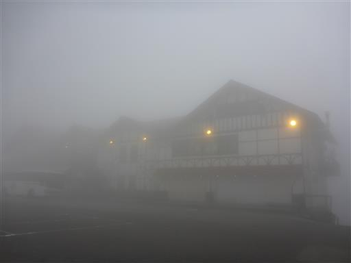
駐車場の側にある神社にお参りして、「晴れますように」とお願いをする。
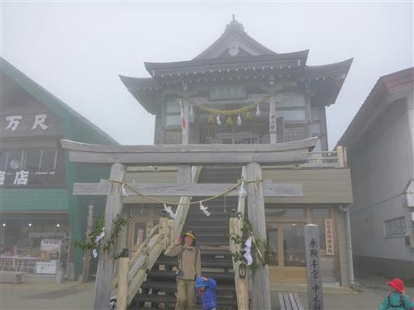
駐車場の端すら見えず、人が雲の中に消えていく。
登山道入口がどこにあるのかすら分からない。天気が良くなる気配がなく、
風も強くて寒いため、本日の登山は無理と判断し、諦めて帰ることにする。
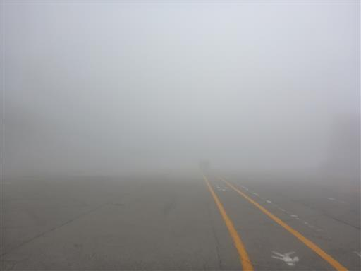
帰りのバスまで30分ほどあるので、側にあるお花畑に遊びに行く。
イワギキョウの花が咲いている。
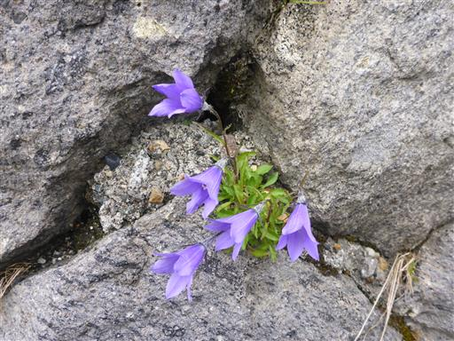
ハクサンイチゲやミヤマアキノキリンソウが咲き乱れている。
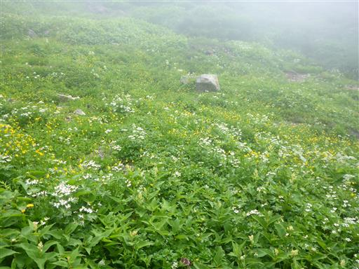
こちらはウサギギク。大柄な花だ。
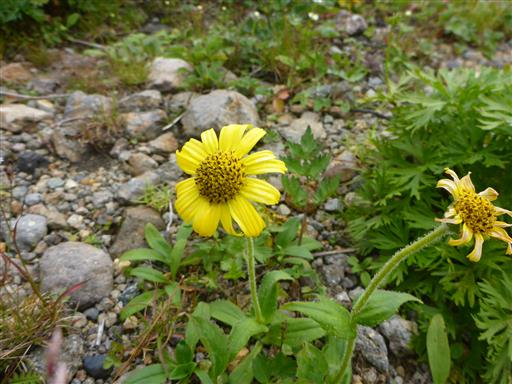
しばらく散策したら駐車場に引き返す。
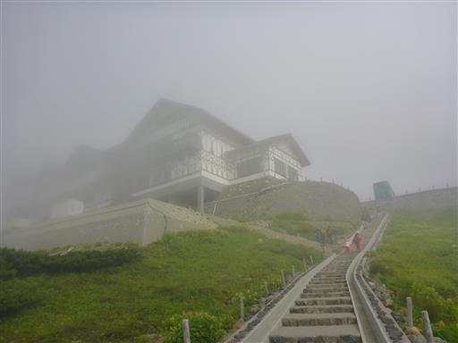
バスに乗って下山する。バス代がもったいないが仕方がない。
下界から雲に覆われている山頂部を見た段階で諦めればよかった。
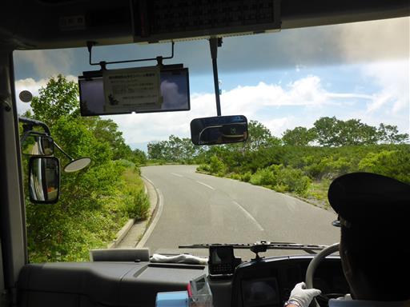
バスが雲の下に出て来る。山頂部は分厚い雲に覆われ続けている。
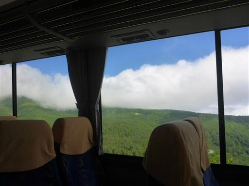
山肌に造られた道路がグネグネと続いている。
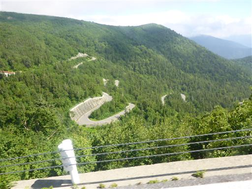
だいぶ下の方まで降りてくる。下界は見事に晴れている。
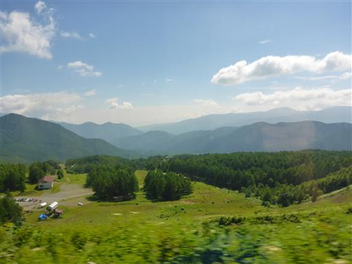
本日は乗鞍高原散策に予定を切り替える。三本滝バス停で下車。
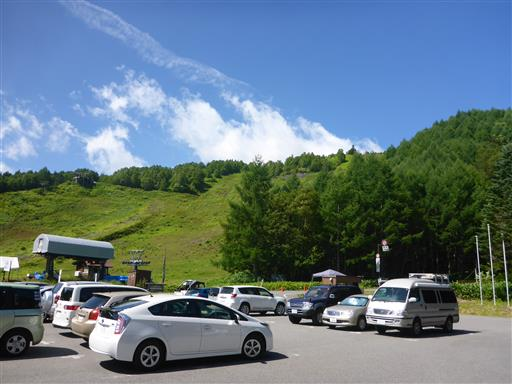
駐車場から伸びる遊歩道に入って三本滝に向かう。
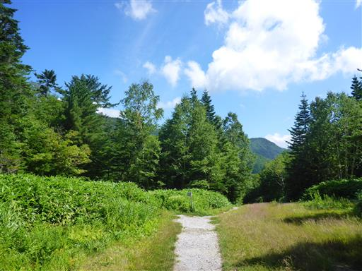
周囲は美しい森に覆われている。
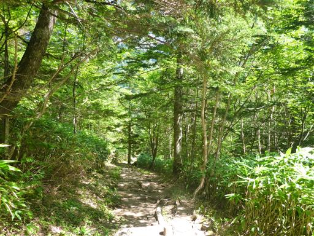
吊橋を渡る。
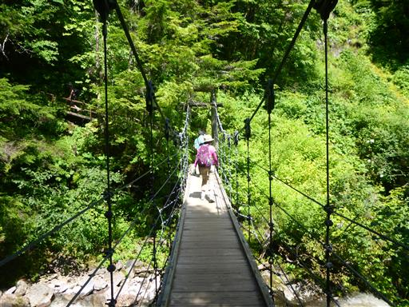
吊橋から下を覗くと名もなき滝が見える。
この辺りはこのような美しい滝があちこちに存在する。
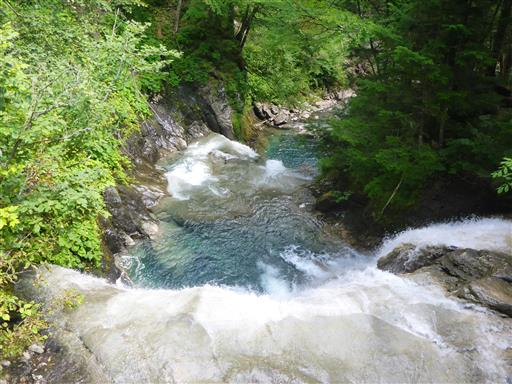
三本滝に到着。形の違う三本の滝が一箇所に集まっている珍しい滝だ。
右の滝は岩の斜面を流れ落ちる滝、真中の滝は垂直に落ちる立派な滝だ。
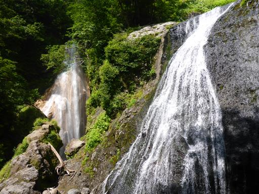
3本目の左の滝はこれ。この滝だけ水量が少なく、かなりしょぼい滝だ。
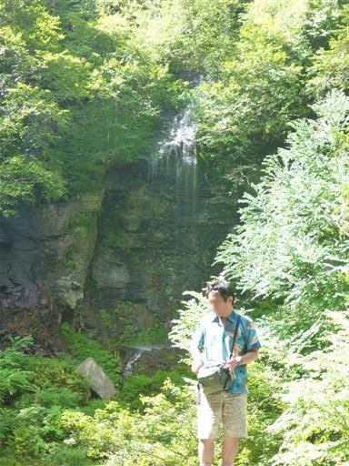
真中の滝に近づける薄い踏み跡がある。
危なっかしい道を先まで進むと滝壺を見ることができる。
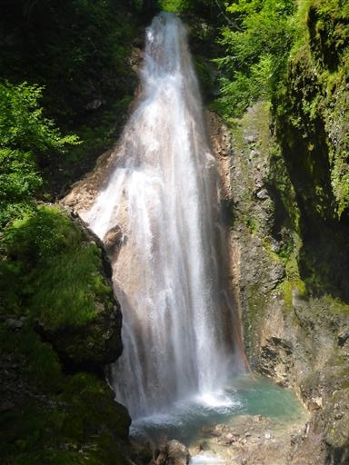
子供たちも行きたいと言って聞かず、結局付いてくる。
両端が崖なので、補助が大変だ。
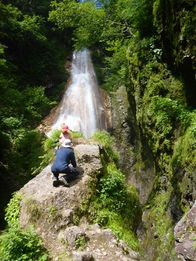
滝の側でおやつを食べたら、次なる目的地である源五郎の滝に向けて歩を進める。
足元の川はきれいな青色で、水の中の倒木がくっきりと見える。
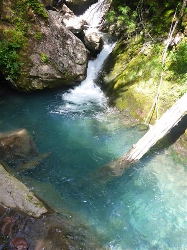
滝から尾根に向かう道は案外険しい道だ。
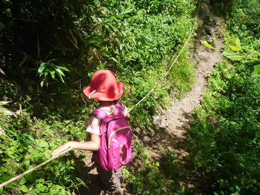
息子は小さい体をフル動員して頑張って登っている。

分岐点に到着。ここは乗鞍岳への登山道で、ここを登り続けると山頂に辿り着ける。
我々は反対方向の下り道に入って行く。
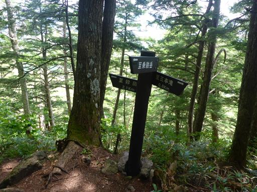
森の中の展望が開けない道が続く。
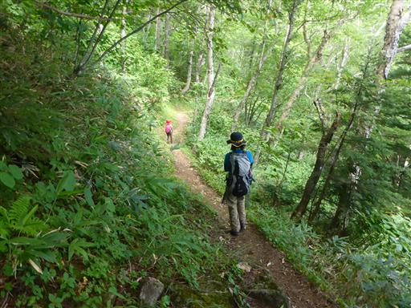
緩やかな傾斜の登山道が続くが、一箇所梯子を下る所がある。
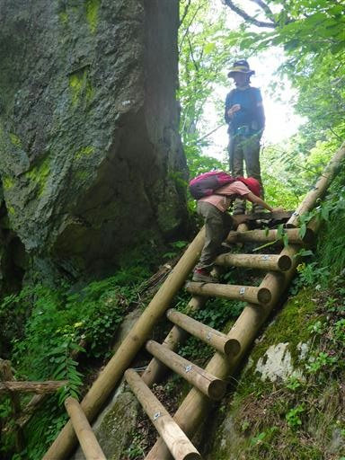
オダマキの花。一輪だけポツリと咲いている。
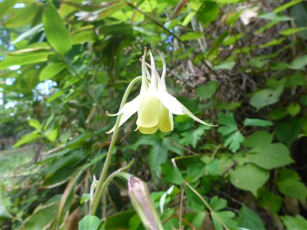
登山道には草が生えている。あまり踏まれていない道のようだ。
確かに付近に歩いている人は全く見かけない。

視界が開けると乗鞍高原周辺の山々が見渡せる。乗鞍岳から伸びる尾根だ。
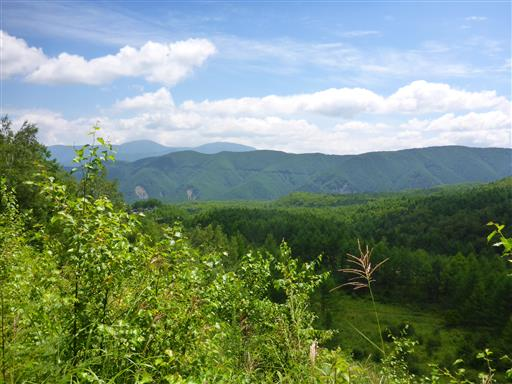
しばらく下るとスキー場のゲレンデに出てくる。日差しを遮るものが無くなり、かなり暑い。
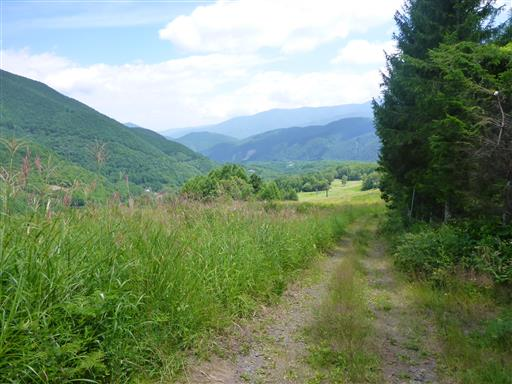
ユリの花があちらこちらに咲いている。息子は「タコみたい」と言っている。
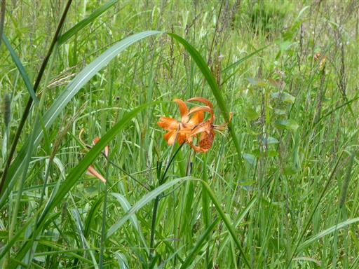
乗鞍岳方面の視界が広がる。相変わらず山頂は雲に覆われている。
早々に諦めて下山したのは正解だったようだ。
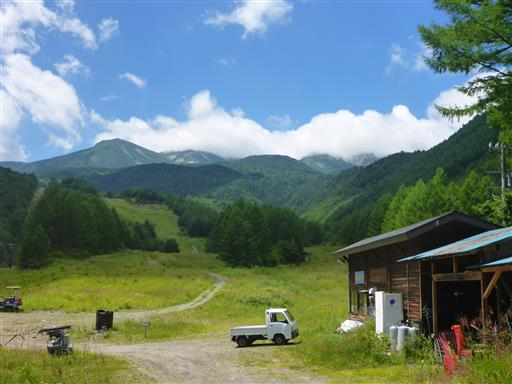
車道を横切り善五郎の滝に向かう。
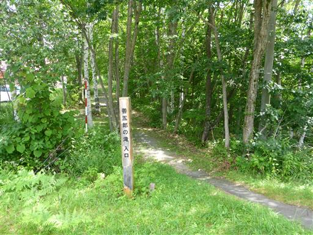
クマ除けの鐘があるので鳴らしていく。
ここから先、所々にこの鐘が設置されている。クマの数は多いようだ。
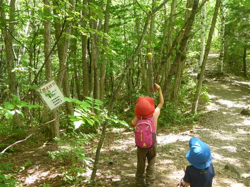
善五郎の滝の滝見台に到着。美しい形の滝だ。
少し滝から遠いのが残念だ。
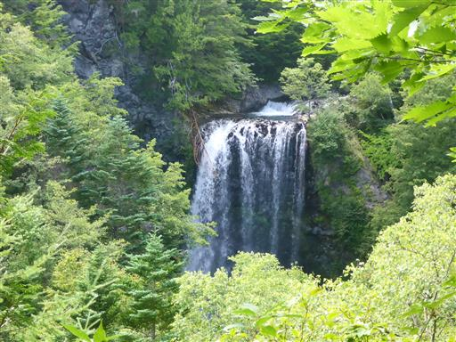
ベンチがあるため、ここで昼食をとることにする。
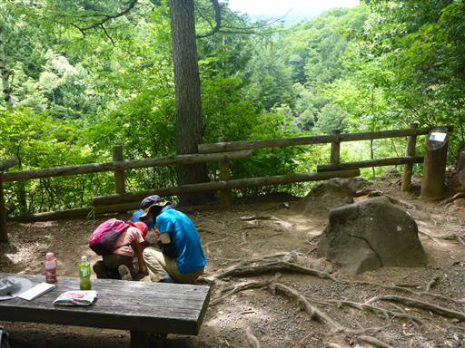
昼食を取ったら先に進む。次の目的地は牛留池だ。
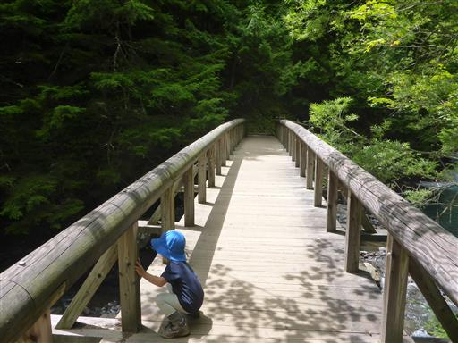
道なりに歩いて行くと、善五郎の滝の滝壺付近に出て来る。
ここからだと迫力のある滝を眺めることができる。地図には滝見台しか記載されておらず、
こんな間近で見られるのであれば、こちらで昼食をとれば良かった。
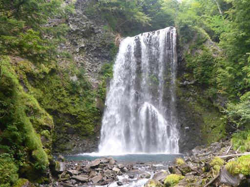
再び森の中に入って行く。
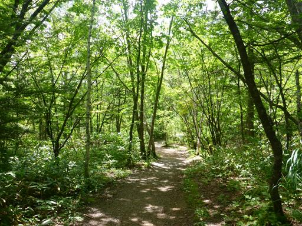
牛留池に到着。背景の乗鞍岳はやっぱり雲の中だ。
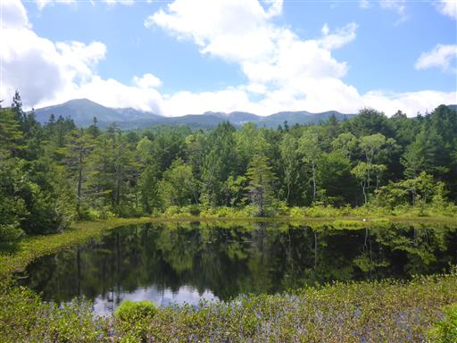
一回転した松の木。何とも不思議な形の木だ。
調べてみると、雪の重みで幹が折れた後、
持ち直して上に伸びていったらしい。
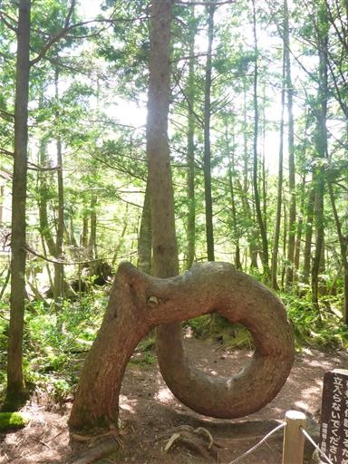
一回転した後、幹の上部はまっすぐ上に伸びている。
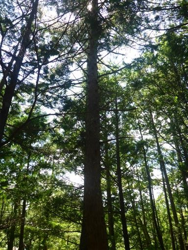
牛留池から車を停めた観光センターまで歩いて戻る。
再び人影が少なくなると、道が荒れてくる。
橋の端は歩かないようテープが貼られている。
息子は眠くて機嫌が悪く、キャリアに乗せてあげたが泣きまくっている。
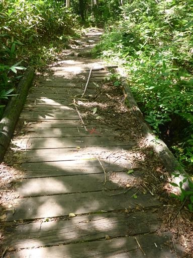
周囲は白樺の木が多い。
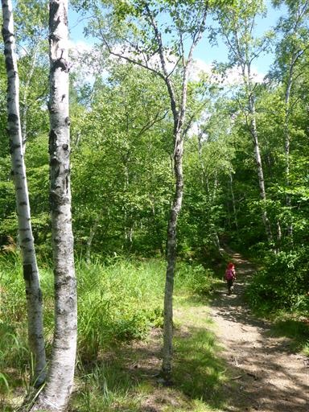
一ノ瀬園地のレストハウスに到着。
息子は泣き疲れて眠っているので、3人でソフトクリームを食べて休憩する。
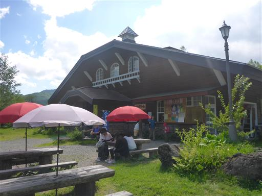
ここから駐車場まであとわずか。最後は緩やかな登り坂だ。
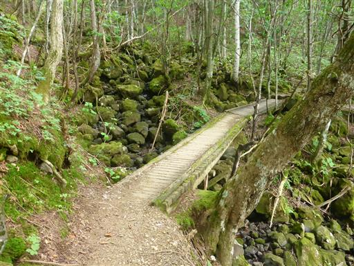
ようやく観光センターの駐車場に到着する。
休憩込みで5時間近くもかかり、思った以上に長い道のりだった。
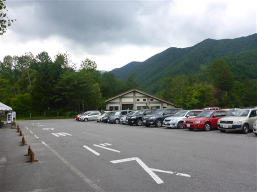
宿に戻る。息子は休憩室のおもちゃで遊んでいる。
明日の乗鞍岳リベンジに向けて早めに寝る。
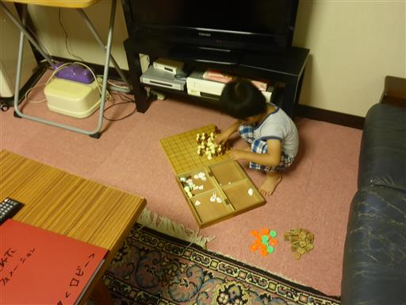